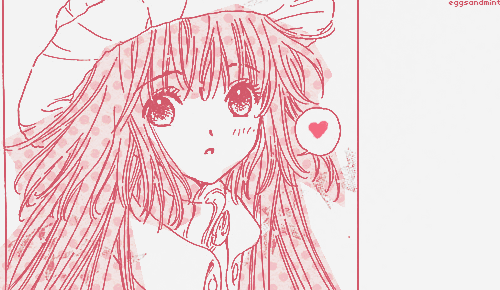
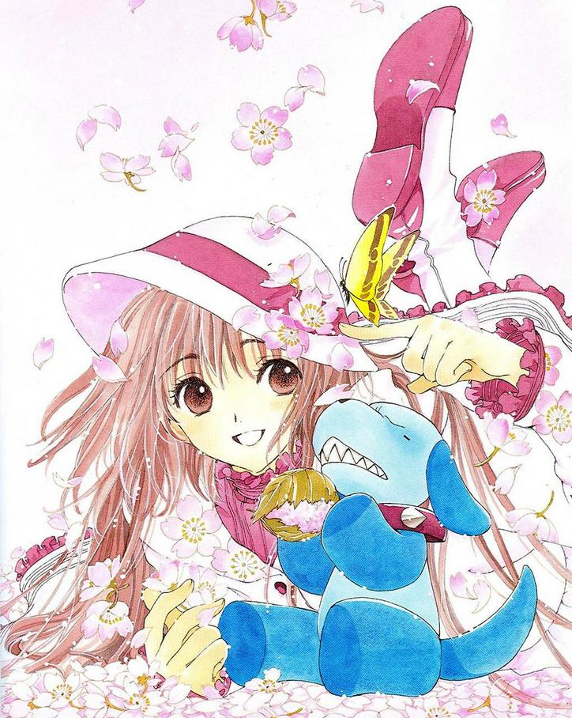
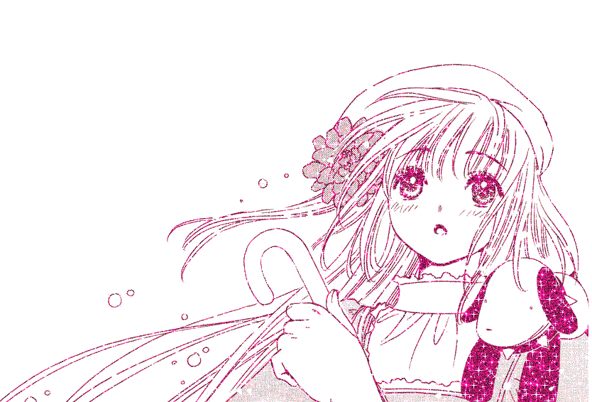
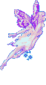

kobato.

 When i got the email with the giftee info, I was happy to find out that one of the interests listed was Clamp, because I had just read Kobato a few months ago! I liked it, it's a really cute and funny shoujo manga. I haven't watched the anime yet though, but I want to! I hope you like this shrine Floralchai! from Lydels
When i got the email with the giftee info, I was happy to find out that one of the interests listed was Clamp, because I had just read Kobato a few months ago! I liked it, it's a really cute and funny shoujo manga. I haven't watched the anime yet though, but I want to! I hope you like this shrine Floralchai! from Lydels


Kobato is a manga by Clamp. It was published from 2004 to 2011. The protagonist, Kobato Hanato, is a mysterious girl with a mission to fill a bottle with people's healed hearts in order to have a wish granted. The anime adaptation aired on 2009. There are also two light novels, titled "the girls came from heaven" and "just a wish", both published in 2010.
I haven't read anything else from Clamp but after Kobato I can see why their work is so loved. Not only its beautiful to look at (I don't know how they managed to come up with so many beautiful outfits for kobato each chapter) but the lore was really interesting and it went a lot deeper than i thought it would! - Lydels

I like to associate characters w/ songs and I think this is the one that sounds like kobato the most to me! It's like, upbeat and happy on the surface but at the same time it's melancholic and it sounds almost a bit off. The muffled sound that gets fuller in the last part reminds me of kobato as well. - Lydels
